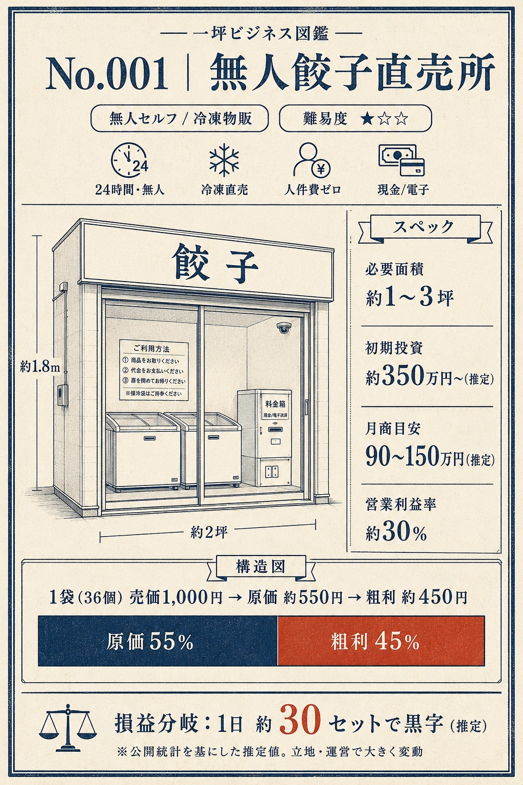

RZ-01
ラーメンビジネス図鑑
ラーメン店を、味ではなく原価・工程・回転・撤退ラインで見る経済図鑑。
- X
- @ramen_zukan_jp
- note
- ラーメンビジネス図鑑
- Gate
- G5 required
仕事・商い・社会現象の標本庫
ラーメン店を味ではなく損益で見る。小さな商いを開業と撤退の両面から見る。ニュースの体感を数字でほどく。図鑑シリーズは、感情ではなく観察で読むための編集レーベルです。


Series Registry
RZ-01
ラーメン店を、味ではなく原価・工程・回転・撤退ラインで見る経済図鑑。
IP-01
小さな商いを、開業条件と撤退条件の両方から標本化する図鑑。
FF-01
強い通説や体感を、公的データで開いて見る図鑑。単一犯人にしない。
Specimens
note Magazine
note は zukan_jp に集約し、図鑑ごとにマガジンを分ける。X は発見、LP は文脈、Kit は所有リスト、note は読ませ面と課金面を担当する。
Launch Setup